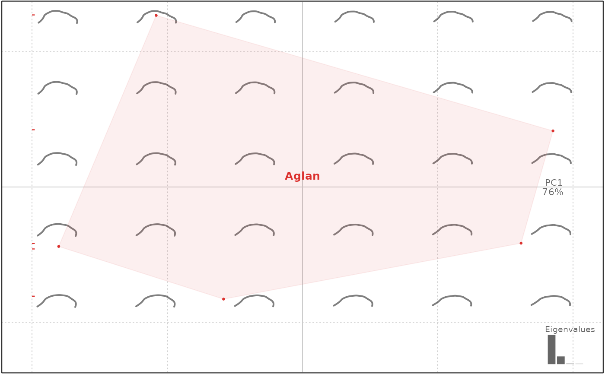
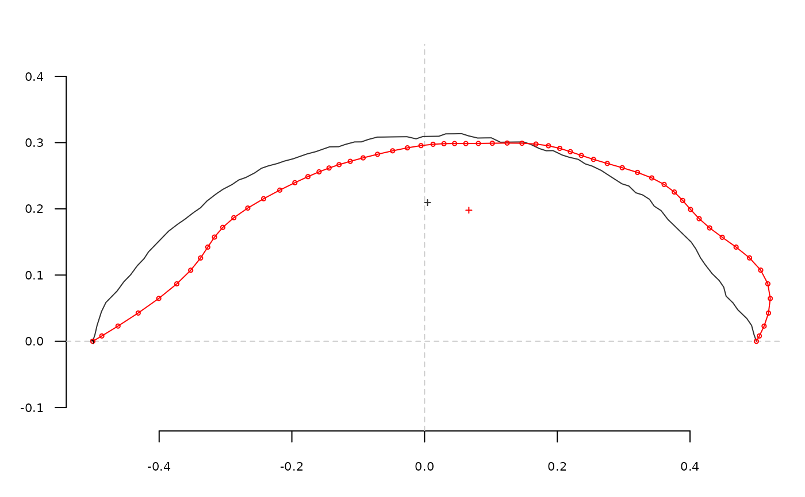

Calculates discrete cosine transforms, as introduced by Dommergues and colleagues, on a shape (mainly open outlines).
Usage
dfourier(coo, nb.h)
# Default S3 method
dfourier(coo, nb.h)
# S3 method for class 'Opn'
dfourier(coo, nb.h)
# S3 method for class 'list'
dfourier(coo, nb.h)
# S3 method for class 'Coo'
dfourier(coo, nb.h)Value
a list with the following components:
an the A harmonic coefficients
bn the B harmonic coefficients
mod the modules of the points
arg the arguments of the points
Note
This method has been only poorly tested in Momocs and should be considered as experimental. Yet improved by a factor 10, this method is still long to execute. It will be improved in further releases but it should not be so painful right now. It also explains the progress bar. Shapes should be aligned before performing the dct transform.
Silent message and progress bars (if any) with options("verbose"=FALSE).
References
Dommergues, C. H., Dommergues, J.-L., & Verrecchia, E. P. (2007). The Discrete Cosine Transform, a Fourier-related Method for Morphometric Analysis of Open Contours. Mathematical Geology, 39(8), 749-763. doi:10.1007/s11004-007-9124-6
Many thanks to Remi Laffont for the translation in R).
See also
Other dfourier:
dfourier_i(),
dfourier_shape()
Examples
o <- olea %>% slice(1:5) # for the sake of speed
od <- dfourier(o)
#> 'nb.h' not provided and set to 12
#>
od
#> An OpnCoe object [ discrete cosine tansform analysis ]
#> --------------------
#> - $coe: 5 open outlines described
#> # A tibble: 5 × 4
#> var domes view ind
#> <fct> <fct> <fct> <fct>
#> 1 Aglan cult VD O10
#> 2 Aglan cult VL O10
#> 3 Aglan cult VD O11
#> 4 Aglan cult VL O11
#> 5 Aglan cult VD O12
op <- PCA(od)
plot(op, 1)
#> will be deprecated soon, see ?plot_PCA

# dfourier and inverse dfourier
o <- olea[1]
o <- coo_bookstein(o)
coo_plot(o)
o.dfourier <- dfourier(o, nb.h=12)
o.dfourier
#> $an
#> [1] -3.11820730 -0.13206715 -0.24781390 -0.09660325 -0.06788311 -0.06691169
#> [7] -0.03519719 -0.06016120 -0.02071002 -0.06544994 -0.01169704 -0.06810722
#>
#> $bn
#> [1] 0.032926049 -0.914830858 0.005334948 -0.268975696 -0.006644877
#> [6] -0.101625518 0.003834764 -0.049467452 0.003042230 -0.028964333
#> [11] -0.002260202 -0.022833346
#>
#> $mod
#> [1] 3.11838113 0.92431446 0.24787132 0.28579733 0.06820756 0.12167547
#> [7] 0.03540548 0.07788709 0.02093227 0.07157253 0.01191341 0.07183283
#>
#> $phi
#> [1] 3.131034 -1.714168 3.120068 -1.915601 -3.044016 -2.153064 3.033070
#> [8] -2.453432 2.995739 -2.724958 -2.950716 -2.818113
#>
o.i <- dfourier_i(o.dfourier)
o.i <- coo_bookstein(o.i)
coo_draw(o.i, border='red')

#future calibrate_reconstructions
o <- olea[1]
h.range <- 2:13
coo <- list()
for (i in seq(along=h.range)){
coo[[i]] <- dfourier_i(dfourier(o, nb.h=h.range[i]))}
names(coo) <- paste0('h', h.range)
panel(Opn(coo), borders=col_india(12), names=TRUE)
title('Discrete Cosine Transforms')